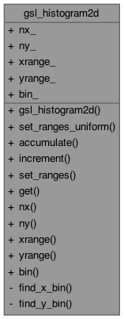
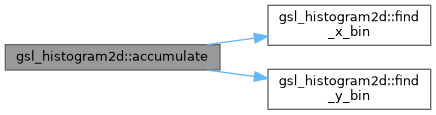
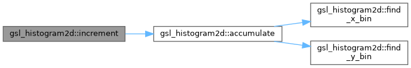
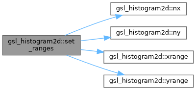

- Generated on Wed Apr 29 2026 18:31:25 for OPALX (Object Oriented Parallel Accelerator Library for Exascal) by
 1.9.8
1.9.8
|
OPALX (Object Oriented Parallel Accelerator Library for Exascal) master (99cf8df077ee)
OPALX
|
2D histogram with explicit x/y bin edges. More...
#include <GSLHistogram.h>

Public Member Functions | |
| gsl_histogram2d () | |
| void | set_ranges_uniform (double xmin, double xmax, double ymin, double ymax) |
| Set uniform x/y bin edges over \([x_{\min},x_{\max}]\) and \([y_{\min},y_{\max}]\). | |
| void | accumulate (double x, double y, double weight) |
| Accumulate a weighted sample into the 2D histogram. | |
| void | increment (double x, double y) |
Increment the bin containing x,y by 1. | |
| void | set_ranges (const double *xrange, size_t nx, const double *yrange, size_t ny) |
| Set explicit x/y bin edges. | |
| double | get (size_t i, size_t j) const |
| Get the bin count for index \((i,j)\). | |
| size_t | nx () const |
| Number of x bins. | |
| size_t | ny () const |
| Number of y bins. | |
| const std::vector< double > & | xrange () const |
| X-axis bin edges. | |
| const std::vector< double > & | yrange () const |
| Y-axis bin edges. | |
| const std::vector< double > & | bin () const |
| Bin count array. | |
Public Attributes | |
| size_t | nx_ |
| size_t | ny_ |
| std::vector< double > | xrange_ |
| std::vector< double > | yrange_ |
| std::vector< double > | bin_ |
Private Member Functions | |
| size_t | find_x_bin (double x) const |
| size_t | find_y_bin (double y) const |
2D histogram with explicit x/y bin edges.
Definition at line 184 of file GSLHistogram.h.
|
inline |
Definition at line 186 of file GSLHistogram.h.
|
inline |
Accumulate a weighted sample into the 2D histogram.
| x | Input: x sample value. |
| y | Input: y sample value. |
| weight | Input: weight to add to the bin. |
Definition at line 213 of file GSLHistogram.h.
References bin_, find_x_bin(), find_y_bin(), nx_, and ny_.
Referenced by gsl_histogram2d_accumulate(), and increment().

|
inline |
Bin count array.
Definition at line 266 of file GSLHistogram.h.
References bin_.
Referenced by gsl_histogram2d_fprintf(), and gsl_histogram2d_pdf::init().
|
inlineprivate |
Definition at line 275 of file GSLHistogram.h.
Referenced by accumulate().
|
inlineprivate |
Definition at line 283 of file GSLHistogram.h.
Referenced by accumulate().
|
inline |
Get the bin count for index \((i,j)\).
| i | Input: x bin index. |
| j | Input: y bin index. |
Definition at line 245 of file GSLHistogram.h.
References bin_, nx_, and ny_.
Referenced by gsl_histogram2d_get().
|
inline |
Increment the bin containing x,y by 1.
| x | Input: x sample value. |
| y | Input: y sample value. |
Definition at line 224 of file GSLHistogram.h.
References accumulate().
Referenced by gsl_histogram2d_increment().

|
inline |
Number of x bins.
Definition at line 254 of file GSLHistogram.h.
References nx_.
Referenced by gsl_histogram2d_fprintf(), gsl_histogram2d_nx(), gsl_histogram2d_pdf::init(), set_ranges(), and LaserProfile::setupRNG().
|
inline |
Number of y bins.
Definition at line 257 of file GSLHistogram.h.
References ny_.
Referenced by gsl_histogram2d_fprintf(), gsl_histogram2d_ny(), gsl_histogram2d_pdf::init(), set_ranges(), and LaserProfile::setupRNG().
|
inline |
Set explicit x/y bin edges.
| xrange | Input: x edges array ( \(n_x+1\)). |
| nx | Input: number of x edges. |
| yrange | Input: y edges array ( \(n_y+1\)). |
| ny | Input: number of y edges. |
Definition at line 233 of file GSLHistogram.h.
References nx(), nx_, ny(), ny_, xrange(), xrange_, yrange(), and yrange_.
Referenced by gsl_histogram2d_set_ranges().

|
inline |
Set uniform x/y bin edges over \([x_{\min},x_{\max}]\) and \([y_{\min},y_{\max}]\).
| xmin | Input: x lower bound (inclusive). |
| xmax | Input: x upper bound (exclusive). |
| ymin | Input: y lower bound (inclusive). |
| ymax | Input: y upper bound (exclusive). |
Definition at line 193 of file GSLHistogram.h.
References nx_, ny_, xrange_, and yrange_.
Referenced by gsl_histogram2d_set_ranges_uniform().
|
inline |
X-axis bin edges.
Definition at line 260 of file GSLHistogram.h.
References xrange_.
Referenced by gsl_histogram2d_fprintf(), gsl_histogram2d_pdf::init(), and set_ranges().
|
inline |
Y-axis bin edges.
Definition at line 263 of file GSLHistogram.h.
References yrange_.
Referenced by gsl_histogram2d_fprintf(), gsl_histogram2d_pdf::init(), and set_ranges().
| std::vector<double> gsl_histogram2d::bin_ |
Definition at line 272 of file GSLHistogram.h.
Referenced by accumulate(), bin(), get(), and gsl_histogram2d_alloc().
| size_t gsl_histogram2d::nx_ |
Definition at line 269 of file GSLHistogram.h.
Referenced by accumulate(), find_x_bin(), get(), gsl_histogram2d_alloc(), nx(), set_ranges(), and set_ranges_uniform().
| size_t gsl_histogram2d::ny_ |
Definition at line 269 of file GSLHistogram.h.
Referenced by accumulate(), find_y_bin(), get(), gsl_histogram2d_alloc(), ny(), set_ranges(), and set_ranges_uniform().
| std::vector<double> gsl_histogram2d::xrange_ |
Definition at line 270 of file GSLHistogram.h.
Referenced by find_x_bin(), set_ranges(), set_ranges_uniform(), and xrange().
| std::vector<double> gsl_histogram2d::yrange_ |
Definition at line 271 of file GSLHistogram.h.
Referenced by find_y_bin(), set_ranges(), set_ranges_uniform(), and yrange().